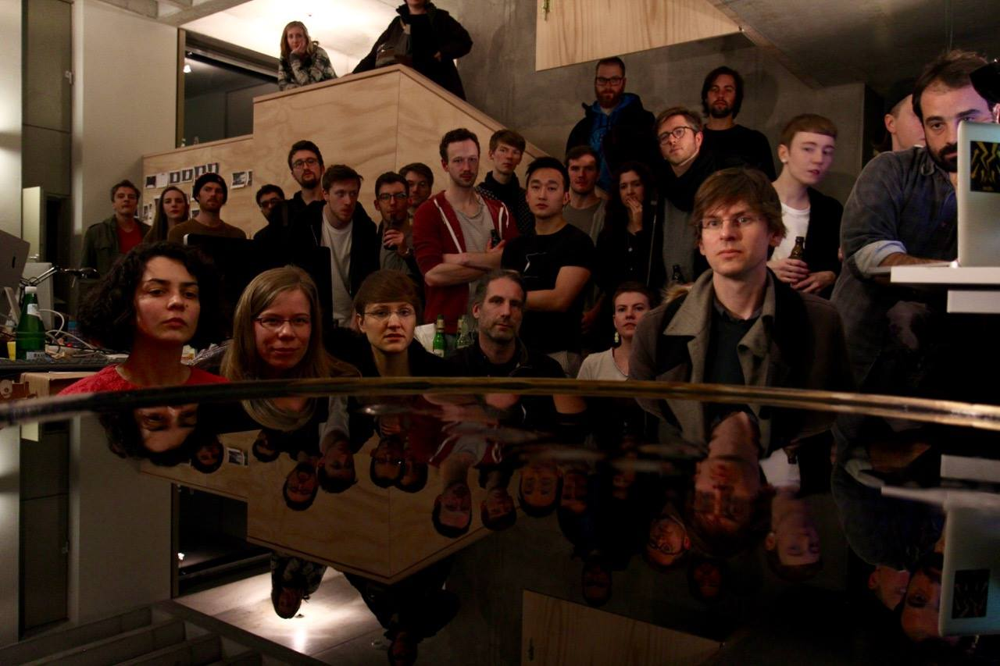

Sidiros
A machine manipulating magnetic fields on a surface, to instantly create sculptures out of solidified ferrofluid.
Sidiros is one of my favourite projects that never quite happened. It uses the real-time creation of magnetic fields to manipulate ferrofluid into an always-transforming live sculpture, realised over two on-again-off-again years during an artistic residency at Artificial Rome. The premise: a person walks up to a tank filled with ferrofluid, gets face-tracked, and their face is rendered back to them in solidified ferrofluid.

Driving that many electromagnets in a confined space needed a versatile custom circuit — able to drive 32 unidirectional electromagnets or motors of up to 1 amp each, controlled via shift registers with just 4 lines of code from an Arduino. Daisy-chaining boards over 4 wires, we're currently driving 160 bipolar magnets from a single Arduino, with headroom to run boards in parallel if a motor needs more than 1 amp.